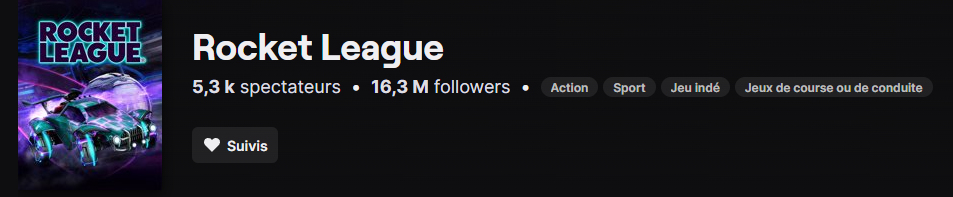

L'accessibilité du jeu
Rocket League est un jeu très accessible aux débutants dans le monde du jeu vidéo. En effet, depuis le 23 septembre 2020 le jeu est totalement gratuit, alors qu'il coûtait auparavant 19.99€, ce qui a permit à énormément de joueurs de commencer à jouer au jeu. De plus, les règles et le but du jeux sont très simples à comprendre pour un néophyte puisqu'il s'agit des règles d'un match de foot. D'autres facteurs permettent également l'accessibilité du jeu à un plus grand nombre de personnes.Le cross-plateforme
Le terme cross-platform signifie pouvoir jouer à un même jeu sur différentes consoles. Rocket League a autorisé le cross-plateforme ce qui permet encore une fois d'avoir plus de joueur sur le jeu. Le jeu est jouable sur Playstation 4, Xbox One, Windows, Mac, Linux, et Nintendo Switch. Il a même maintenant une version pour téléphone du jeu appelé Rocket League SideSwipe mais dans cette version du jeu eul les joueur sur mobile peuvent jouer entre eux.Les vidéos et live qui ont fait connaître le jeu
Il y a eu énormément de vidéo faites sur le jeu par des influenceur connu ou non sur la plateforme de vidéo Youtube qui ont permit de faire connaître le jeu il y a l'heure d'aujourd'hui toujours énormément de vidéo faites sur le jeu. De plus il y a des streams qui ont était fait sur la plateforme twitch depuis que le jeu existe encore une fois par des streams connu ou non qui ont permis de faire connaître le jeu. Et il y a toujours actuellement des streams sur le jeu